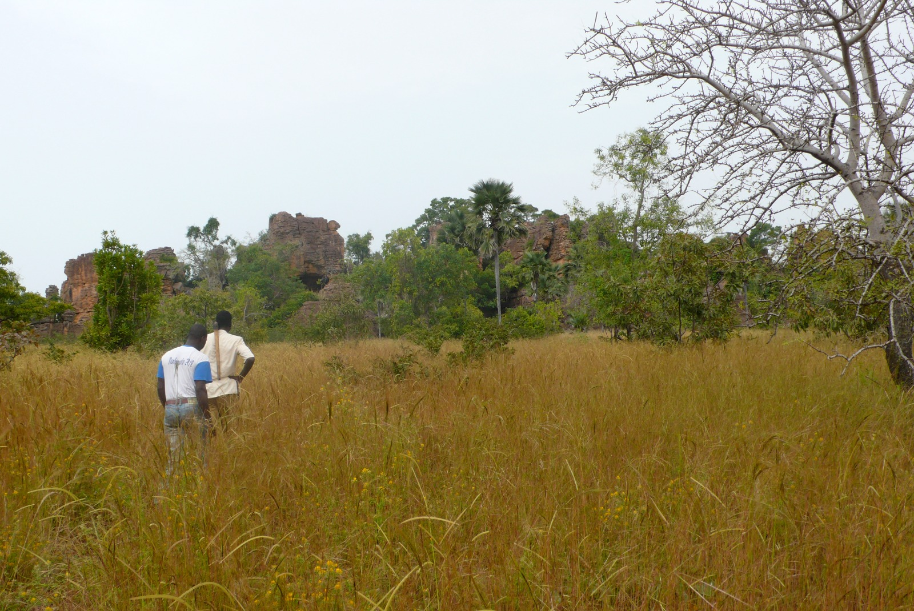
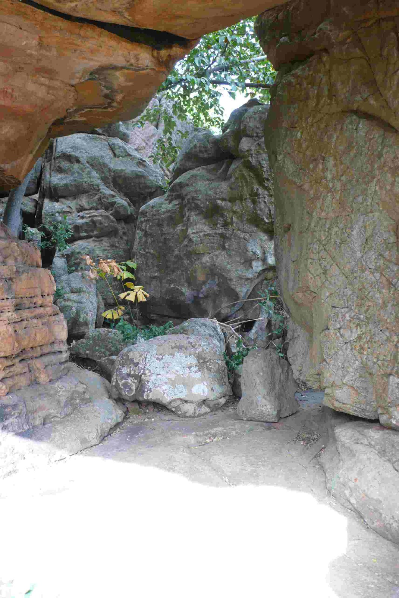

Bienvenue sur la page: Taverne De Douna

Les Cavernes de Douna se trouvent au nord de la ville de Douna, dans la région des Cascades, province du Léraba, au Burkina Faso. Creusées dans le grès, elles forment un ensemble de galeries et d’abris naturels. Le site s’étend sur plusieurs hectares de falaises et de végétation dense. Depuis le sommet, la vue plonge sur la savane et les villages alentour. C’est un paysage calme, sculpté par le temps et l’érosion. L’ambiance y est fraîche et silencieuse, loin du bruit de la ville. Les formes rocheuses créent des jeux d’ombre et de lumière uniques. Chaque cavité raconte une histoire différente du lieu. Douna est un secret bien gardé de l’ouest burkinabè.
Historiquement, les cavernes ont servi de refuge aux Turka pendant les guerres. De 1725 à 1830, elles ont résisté aux assauts des royaumes de Kong. En 1830, elles ont protégé la population face aux attaques de Bala. Entre 1887 et 1896, même les armées de Tiéba et Ba-Bamba n’ont pas réussi à les soumettre. Grâce à leur position dans les falaises, les Turka sont restés indépendants. Les cavernes étaient organisées : salles de réunion, infirmerie, prison. Chaque espace avait une fonction précise pour la vie en résistance. Cette mémoire collective est encore transmise oralement aujourd’hui. Marcher ici, c’est marcher dans les pas des anciens guerriers. Le site est un monument vivant de la résistance Turka.
Ouvertes au public depuis juillet 2010, les cavernes mêlent histoire et nature. Certaines zones restent sacrées et interdites aux non-initiés. Les anciens du village veillent au respect des lieux et des interdits. Un guide local est indispensable pour comprendre le sens des espaces. Il explique pourquoi telle cavité ne doit pas être photographiée. Cette règle renforce le caractère mystique du site. Le visiteur découvre ainsi une culture vivante, pas un musée figé. L’accueil des habitants est simple, direct et chaleureux. On sent que le lieu appartient d’abord à la communauté. Visiter Douna, c’est entrer dans leur histoire avec respect.

La géologie du site fascine par ses formes sculptées par l’eau et le vent. Les parois gréseuses prennent des couleurs ocre, rouge et beige au soleil. Les cavités créent des corridors naturels où l’air circule en permanence. Des arbres poussent dans les fissures, s’accrochant à la roche. Les oiseaux nichent dans les hauteurs inaccessibles des falaises. En saison des pluies, de petites cascades coulent le long des parois. La végétation verdoyante contraste avec la pierre sèche. C’est un microclimat frais et humide au cœur de la savane. Les photographes aiment les contrastes entre ombre et lumière. Chaque heure du jour change l’atmosphère du site.

L’accès aux Cavernes de Douna se fait depuis le village de Douna. Comptez 1h30 de route depuis Banfora sur piste praticable en saison sèche. Il faut prévoir de bonnes chaussures, de l’eau et un chapeau. La visite dure entre 1h30 et 2h selon le circuit choisi. Le sentier monte progressivement jusqu’aux entrées principales des cavernes. Certains passages sont étroits, d’autres s’ouvrent sur de vastes salles. Le guide adapte le parcours selon le temps et la forme du groupe. Il n’y a pas de boutiques sur place, préparez votre pique-nique. Le calme du site permet une vraie déconnexion. C’est une sortie idéale pour les amateurs d’histoire et de randonnée.

Si tu cherches un lieu hors des sentiers battus, Douna t’attend. Ici, pas de foule, pas de bruit, juste la roche, l’histoire et le silence. Tu toucheras la pierre qui a protégé tout un peuple pendant 3 siècles. Tu comprendras pourquoi les Turka ont choisi ce lieu comme dernier rempart. Chaque pas dans les galeries te rapproche de leur courage et de leur mémoire. Au sommet, le panorama te récompense avec une vue à couper le souffle. Le coucher de soleil sur les falaises embrase la roche en rouge profond. C’est un moment rare, brut, authentique, loin du tourisme de masse. Les Cavernes de Douna ne se racontent pas, elles se vivent. Viens écouter le silence des anciens, il a encore beaucoup à dire.